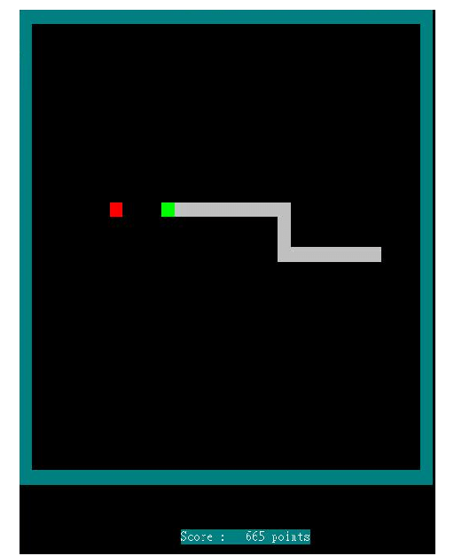

Snake is a classic arcade video game released in the mid-1970's. The player start off by controlling a small series of blocks resembling a snake, which moves around a playing area. The snake grows in length as it picks up food, which increase points and the aim of the game
is to pick up as much food as possible while trying to avoid hitting the tail, the surrounding walls, or any obstacles within the playing area. The image shown below depicts a classic snake game.

Our approach uses a customised Snake environment using Pygame. Within the environment, we have used Deep Q Networks (DQN) and Reinforcement Learning (RL) algorithms to have AI play the Snake game as opposed to a human operator.
By using DQN, we define the playable area and parameters which interact will define our game. These variables then feed an RL algorithm that integrates with the Snake game environment, receiving rewards for desirable actions (like eating food) and penalties for undesirable actions (like hitting the wall or itself).
Over time, the AI learns to make better decisions to maximize its score.
Code Structure
Breaking down the code, we are presented with 4 primary files that handle the AI Snake model.
1. agent.py
An Agent class is defined, initializing parameters like the number of games played, epsilon (for exploration),
gamma (discount rate), memory buffer, neural network model (Linear_QNet), and a Q-learning trainer (QTrainer).
The get_action method decides the snake's next move. It uses a balance of exploration (random moves) and exploitation
(moves based on the neural network's predictions), with exploration decreasing as more games are played. The train function initializes the game and continuously runs through game loops:
It gets the current state. Determines the next move. Executes the move and observes the reward, new state, and whether the game ended. Trains the neural network with short-term memory. Stores the experience in long-term memory.
If the game ends, it resets, increments the game counter, trains with long-term memory, and updates the number of apples if necessary.
Records high scores and plots performance metrics. This script trains a neural network to play Snake using reinforcement learning, where the agent learns from both immediate and accumulated game experiences.
2. game.py
Initialization and Setup:
The script uses the pygame library to create a snake game, where the snake moves in a grid and eats food (apples) to score points.
It defines necessary imports, initializes pygame, and sets up a font for displaying the score.
Enum and NamedTuple Definitions:
Direction enum specifies possible movement directions: RIGHT, LEFT, UP, DOWN.
Point namedtuple represents coordinates (x, y) on the game grid.
reset method sets initial direction, snake position, score, and places multiple apples randomly on the grid.
_place_food Method,
Places an apple on the grid at a random position, ensuring it doesn't overlap with the snake or other apples.
THe play_step Method,
Handles the game loop,
Collects user input to quit the game,
Moves the snake based on the action taken,
Checks for collisions (game over) or if the snake has eaten an apple,
Updates the game UI and controls game speed.
is_collision Method;
Checks if the snake's head collides with the boundary or itself.
_update_ui Method:
Renders the snake, apples, and score on the game window.
_move Method:
Updates the snake's direction and position based on the action taken (straight, right turn, left turn).
Game Mechanics:
The snake grows when it eats an apple, and a new apple is placed randomly on the grid.
The game is over if the snake collides with the boundaries or itself.
The score increases by 1 for each apple eaten.
3. helper.py
This script dynamically updates a plot displaying the progression of game scores and mean scores during training, enabling real-time visualization of the training performance within a Jupyter notebook.
plt.title('Training...') sets the title of the plot.
plt.xlabel('Number of Games') and plt.ylabel('Score') label the x and y axes respectively.
plt.plot(scores) and plt.plot(mean_scores) plot the scores and mean scores on the graph.
plt.ylim(ymin=0) sets the minimum y-axis limit to 0.
plt.text(len(scores)-1, scores[-1], str(scores[-1])) and plt.text(len(mean_scores)-1, mean_scores[-1], str(mean_scores[-1])) annotate the last points on the scores and mean scores curves with their respective values.
4. model.py
This script defines a neural network model (Linear_QNet) and a training mechanism (QTrainer) for a reinforcement learning task,
specifically tailored for a Q-learning algorithm. The model can be saved and loaded, facilitating training continuation and reuse.
The QTrainer class handles the training process, updating the model based on the agent's interactions with the environment.
Linear_QNet Class:
Constructor (__init__):
Initializes a neural network with two linear layers: linear1 (input to hidden) and linear2 (hidden to output).
If a pre-trained model exists at the specified path, it loads the model's state.
Forward Method:
Defines the forward pass of the network: applies a ReLU activation function after the first linear layer and outputs the result from the second layer.
Save Method:
Saves the model's state dictionary to a specified file path, creating the directory if it doesn't exist.
QTrainer Class:
Constructor (__init__):
Initializes the trainer with the model, learning rate (lr), and discount factor (gamma).
Sets up the optimizer (Adam) and loss function (Mean Squared Error).
train_step Method:
Data Preparation:
Converts state, next state, action, and reward to torch tensors.
Ensures the tensors are 2-dimensional (batch format) by unsqueezing if necessary.
Predicted Q-values:
Computes the predicted Q-values from the current state using the model.
Target Calculation:
Copies the predicted Q-values and updates them with the reward and discounted future reward (if not done) for the action taken.
Loss and Backpropagation:
Computes the loss between the target and predicted Q-values.
Performs backpropagation to update the model's parameters.
How Deep Q-Networks and Reinforcement Learning is utilised
State Representation: The game state is represented as an array of features (e.g., danger in directions, current direction, location of food).
Q-values Approximation: The Linear_QNet neural network approximates Q-values for each possible action given the current state.
Experience Replay: The agent stores past experiences in a memory buffer and samples from this buffer to train the network, breaking correlation between consecutive experiences and stabilizing training.
Epsilon-Greedy Strategy: Balances exploration (random actions) and exploitation (best predicted actions) to ensure the agent explores the environment while also improving its performance.
Bellman Equation: The QTrainer class updates the Q-values using the Bellman equation, which incorporates the immediate reward and the discounted future reward, guiding the agent to maximize cumulative reward.